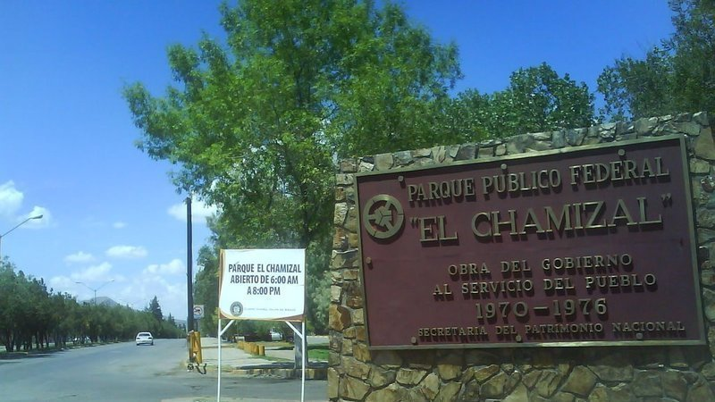
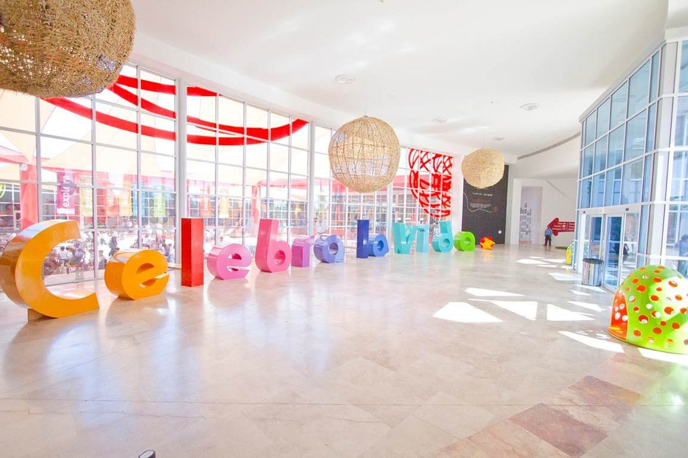
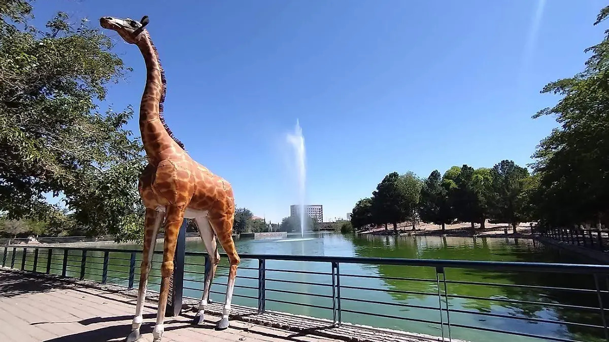
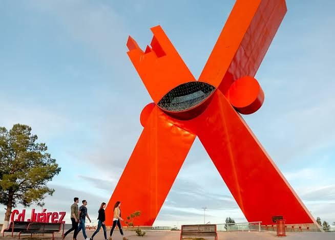
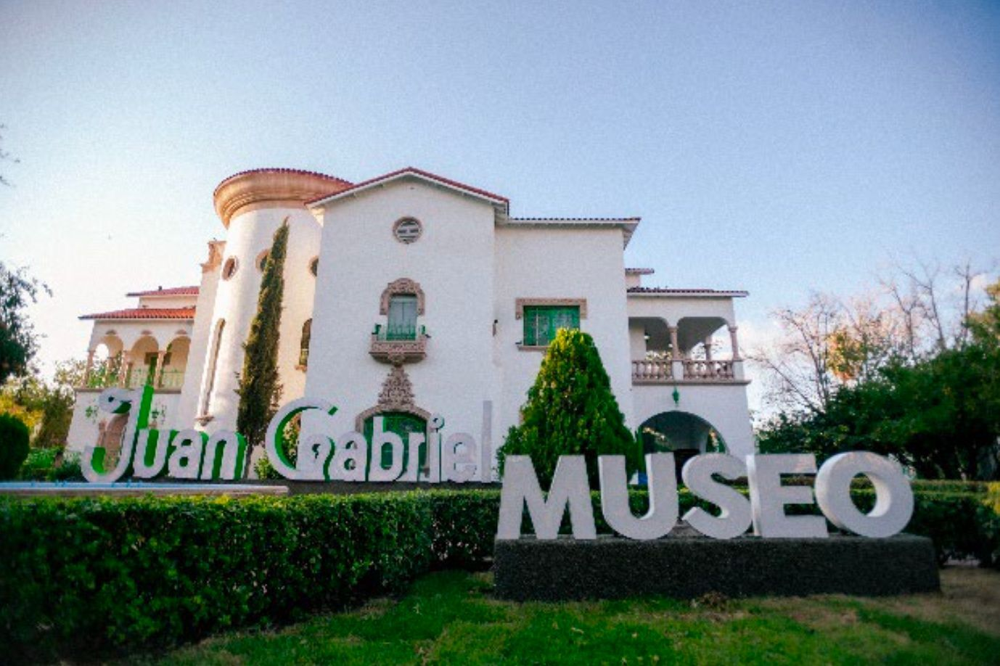
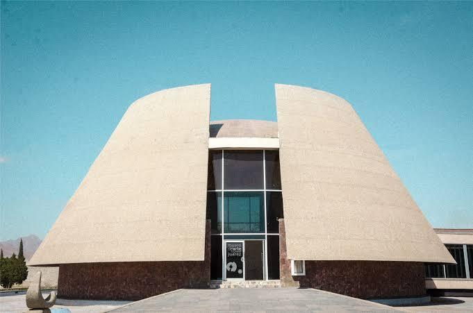
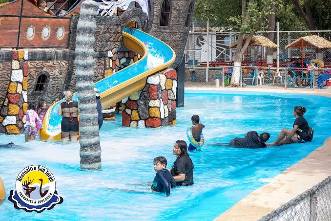
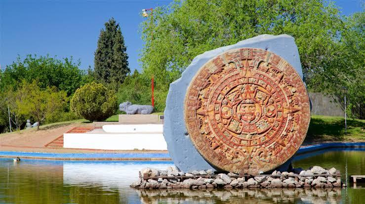
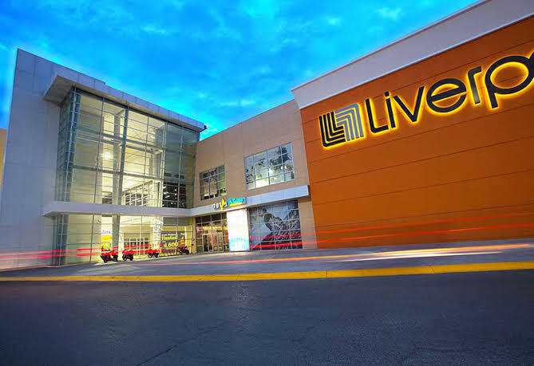
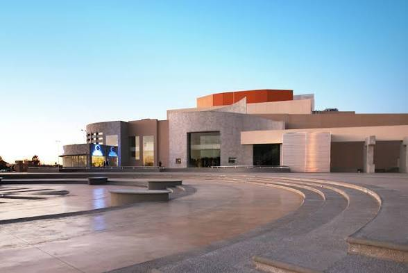

Originalmente llamada Paso del Norte, recibió su actual nombre en 1888 en honor a Benito Juárez, quien se refugiara en la ciudad durante la Segunda Intervención Francesa.
Juárez es junto a la ciudad de Chihuahua, una de las ciudades del norte del país con mayor relevancia histórica para la nación; por ejemplo, la ciudad ha sido en más de una ocasión la capital provisional de la República bajo los mandatos de los presidentes Benito Juárez, Francisco I. Madero y Venustiano Carranza, e igualmente, cuartel del General Francisco Villa.
Debido a la gran cantidad de empresas maquiladoras que posee, la ciudad es, junto a las ciudades de Monterrey y Tijuana, uno de los tres puntos industriales más importantes del norte de México.
La región donde hoy se ubica Ciudad Juárez fue habitada desde los tardíos 1500 casi 100 años antes del año que se denomina su fundación. La región fungía como puesto de avanzada y barracas para los conquistadores españoles.
En 1595, con el permiso del rey Felipe II de España, se iniciaron la exploraciones españolas para colonizar el territorio de Nuevo México, y en 1598 el explorador Juan de Oñate reclamó para el Virreinato de Nueva España la posesión de los territorios más allá del Río Bravo (el río Grande para los estadounidenses) llamando al punto de cruce como Paso del Norte (actualmente lugar en donde se ubican las ciudades fronterizas de El Paso y Ciudad Juárez).
En 1659, el fraile franciscano Fray García de San Francisco fundó lo que hoy es tanto Ciudad Juárez como El Paso, Texas, con el nombre de Misión de Nuestra Señora de Guadalupe de Mansos del Paso del Río del Norte, y construyó la misión de Guadalupe, que hoy se encuentra ubicada junto a la Catedral de Ciudad Juárez.
Como en el resto de lo que conocemos hoy son los estados de Chihuahua y Nuevo México el movimiento de independencia que había estallado en el Bajío tuvo pocas o nulas repercusiones en la zona, aun en 1811 cuando Miguel Hidalgo y los principales caudillos del movimiento fueron fusilados en la hoy capital del estado; al triunfo del movimiento independentista en 1821 liderado por Vicente Guerrero y Agustín de Iturbide toda la provincia se unió a él y al consolidarse la república federal en 1824 y ser constituido el 6 de julio del mismo año, el nuevo estado de Chihuahua Paso del Norte fue incluido en él.
La primera constitución del estado de Chihuahua fue promulgada el 9 de diciembre de 1826 y el 5 de enero de 1826 Paso del Norte quedó constituida como cabecera de uno de los 11 partidos en que se dividió al estado.11 Durante todas las primeras décadas de vida independiente la villa de El Paso se dedicó fundamentalmente al intercambio comercial con Nuevo México y fue famosa por el cultivo que en su entorno se daba de vid, cuya abundancia fue uno de los principales motivos de desarrollo de la zona.
En 1836, con el cambio del régimen federal por el centralista, el Paso del Norte dejó de ser cabecera de partido para serlo de Distrito, uno de los tres en que se dividió el ahora llamado Departamento de Chihuahua.
EL chamizal

Parque Público Federal El Chamizal es el espacio público y recreativo más emblemático de la ciudad. Representa la devolución de tierras por parte de Estados Unidos a México tras la firma de los tratados de 1963.
Amplias áreas verdes con arboledas, senderos y zonas de pícnic.
Espacios para practicar atletismo, fútbol y paseos en bicicleta.
Alberga diversos monumentos históricos y museos dentro de sus áreas
La rodadora

La Rodadora Espacio Interactivo es uno de los museos interactivos más grandes e importantes del norte de México, enfocado en el aprendizaje lúdico para niñas, niños y familias.
Exhibiciones interactivas sobre ciencia, paleontología, ecosistemas del desierto y arte.
Proyecciones en salas multimedia y talleres dinámicos.
Espacios adaptados para la exploración sensorial y la creatividad.
El Parque Central

Parque Central de Ciudad Juárez es un punto de reunión tradicional para las familias juarenses, famoso por sus áreas verdes y sus atracciones familiares.
Lago artificial con lanchas de pedales y zonas de descanso.
Áreas de juegos infantiles, tirolesa y caminos para caminatas.
Puestos de comida local, antojitos y snacks.
Monumento a la mexicanidad

Monumento a la Mexicanidad, popularmente conocido como "La X", es una colosal escultura de 64 metros de altura diseñada por el artista plástico Sebastián.
Símbolo moderno de Ciudad Juárez ubicado en la Plaza de la Mexicanidad.
Sede constante de festivales culturales, conciertos y eventos al aire libre.
Mirador y plaza gastronómica circundante con vistas de la frontera.
Museo Juan Gabriel

Museo Juan Gabriel es el recinto cultural ubicado en la antigua residencia del famoso cantautor "El Divo de Juárez".
Exhibición de vestuarios icónicos, premios, instrumentos y objetos personales del artista.
Recorrido por la arquitectura original de la casona y sus jardines.
Experiencias interactivas que repasan su trayectoria artística y legado musical.
Museo de arte de Ciudad Juarez

Museo de Arte de Ciudad Juárez es un recinto diseñado por el arquitecto Pedro Ramírez Vázquez, inaugurado en 1963 dentro de la Zona Pronaf.
Exposiciones temporales de arte contemporáneo nacional e internacional.
Diseño arquitectónico circular distintivo de la época de modernización fronteriza.
Talleres de pintura, literatura y eventos comunitarios.
Centro recreativo San Jorge

Centro Recreativo San Jorge combina parque acuático y áreas de esparcimiento en la zona rural de la ciudad.
Piscinas, toboganes y chapoteaderos para días calurosos.
Áreas con asadores, sombrillas y palapas para convivencias familiares.
Cuenta con un zoológico contiguo con especies de animales rescatados y de granja.
Museo de arqueologia e historia de el chamizal

Museo de Arqueología e Historia de El Chamizal está enfocado en la divulgación de las culturas prehispánicas del norte y centro de México.
Sala arqueológica con réplicas de piezas prehispánicas y hallazgos regionales.
Exposición sobre la cultura Paquimé / Casas Grandes y los grupos originarios.
Jardines con reproducciones de estelas y esculturas prehispánicas.
Plaza las misiones

Plaza Las Misiones es uno de los centros comerciales más concurridos e importantes de la zona metropolitana.
Tiendas departamentales, boutiques de moda y salas de cine.
Variedad de restaurantes, cafeterías y área de comida rápida.
Espacio climatizado ideal para compras y entretenimiento.
Ciudad Juarez Mexico temple
.jpg)
Ciudad Juárez México Temple es el templo de la Iglesia de Jesucristo de los Santos de los Últimos Días en la ciudad, rodeado por jardines cuidados.
Arquitectura contemporánea con acabados de granito blanco.
Jardines exteriores abiertos para visitantes que buscan un entorno tranquilo.
Punto de referencia comunitario en la zona residencial.
Museo de la revolucion en la frontera
.jpg)
Museo de la Revolución en la Frontera (MUREF) está albergado en la antigua Ex-Aduana Ciudadana del siglo XIX en el Centro Histórico.
Recorrido por el papel determinante de la frontera en la Revolución Mexicana.
Muestra de objetos históricos, fotografías originales y documentos de la época maderista.
Arquitectura histórica con patios centrales y salones de exhibición interactivos.
Centro cultural El Paso del norte

Centro Cultural Paso del Norte es el recinto escénico y cultural más destacado del estado en la ciudad.
Teatro Víctor Hugo Rascón Banda y Sala Octavio Trías para obras y conciertos.
Galería de artes plásticas con exposiciones itinerantes.
Presentaciones de danza, sinfónicas y festivales internacionales.
| Comida |
Ingredientes |
| Burritos |
Tortilla grande de harina de trigo, guisados (deshebrada con chile verde o rojo, chicharrón, chile relleno, asado de puerco, frijol refrito, queso). |
| Torta de Colita de Pavo |
Pan telera o bolillo, colita de pavo frita/dorada, aguacate, tomate, cebolla, chiles jalapeños y mayonesa. |
| Asado de Puerco |
Carne de cerdo, chile colorado (ancho y pasilla), ajo, comino, orégano, sal y manteca de cerdo. |
| Chile Relleno |
Chile verde (chilaca o jalapeño), queso asadero o menonita, huevo para capear, harina, sal y aceite. |
| Barbacoa de Cabeza |
Cabeza de res, cebolla, ajo, laurel, pimienta, sal y chiles secos. |
| Menudo Norteño |
Panza y pata de res, grano de maíz nixtamalizado, chile colorado, ajo, cebolla, orégano y limón. |
| Queso Asadero / Menonita |
Leche entera de vaca, cuajo y sal. |
| Tacos Ahogados |
Tortillas de maíz, carne deshebrada o papa, aceite, jitomate, chile de árbol, cebolla, ajo y sal. |
| Margarita |
Tequila, licor de naranja (Triple Sec o Cointreau), jugo de limón fresco, hielo y sal. |
El Diablo en el palenque Malibú
Cuenta la historia que ocurrió en los años 70 durante una noche de fiesta abarrotada. Una joven deseoerada por bailar dice "Bailaria con el mismo diablo" y entonces entro un hombre con un impecablemente vestido de charro o con traje vaquero de gala, de modales elegantes y con una presencia que captó de inmediato la atención del público. Conforme avanzada la madrugada y al ritmo de la música, el ambiente se tornó cada vez más pesado. El hombre invitó a bailar a la jóven, en la explanada o rueda del palenque. Mientras bailaban ante la mirada de todos, la temperatura del lugar subió de forma sofocante y un penetrante olor a azufre comenzó a invadir el aire. Fue entonces cuando alguien en la multitud miró hacia el suelo y soltó un grito de terror. Bajo el pantalón del elegante charro no había botas, sino una pata de chivo y una pezuña de gallo pisando la arena. En medio del pánico colectivo, las luces del palenque parpadearon, se escuchó un estruendo sordo y el sujeto desapareció dejando una densa nube de humo y a varias personas en shock o en histeria.
La Dama de Blanco de la Carretera Panamericana
En los tramos solitarios que conectan Ciudad Juárez con Chihuahua, especialmente cerca de las dunas de Samalayuca o en curvas pronunciadas de la carretera, varios traileros y conductores han reportado ver a una mujer vestida de blanco pidiendo aventón a la orilla del camino. Quienes se han detenido a subirla aseguran que después de unos kilómetros desaparece del asiento del copiloto, o bien advierte al conductor sobre una curva peligrosa donde ella misma habría perdido la vida décadas atrás.
Las Brujas de la Sierra de Juárez y Samalayuca
Desde hace décadas se platica que en las zonas elevadas de la Sierra de Juárez y entre los médanos de Samalayuca se realizan rituales durante las noches de luna llena. Los pobladores de las colonias del periférico e historias de rancheros locales cuentan haber visto bolas de fuego saltando entre los cerros o cruzando el cielo nocturno, atribuidas a brujas que cambian de forma y rondan el desierto.
El Fantasma del Teatro Coronado / Cine Victoria
El antiguo Cine Victoria (y otros inmuebles históricos del centro de la ciudad) cargan con relatos sobre un "espectador silencioso". Empleados de mantenimiento y cuidadores han contado ver la figura de un hombre vestido con traje antiguo sentado en los palcos a oscuras, o escuchar aplausos y pisadas sobre el escenario cuando el recinto está completamente vacío.